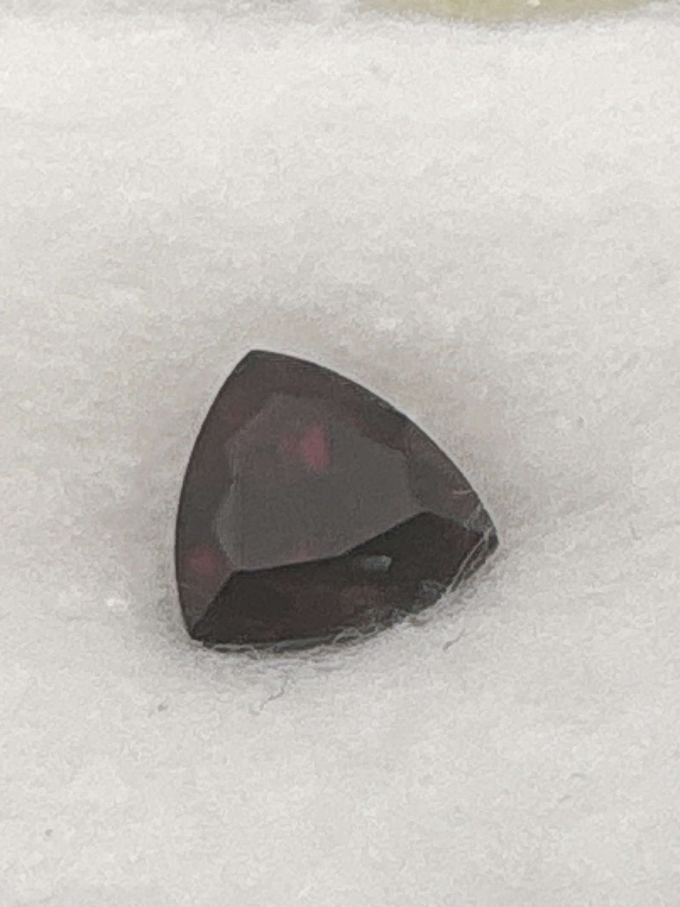

The Gem Drawer › No. 86

A 9 mm trillion in dark reddish-brown; the Kenyan origin claim is unverified.
| Catalogue no. | #86 |
|---|---|
| As labeled | Red Zircon (label claims Kenyan origin - unverified, see notes) |
| Shape / cut | Trillion |
| Weight | 3.4 ct |
| Measurements | 9mm trillion |
| Colour | Dark reddish-brown/maroon (reads darker than typical "red" in photos - see notes) |
| Clarity / condition | Not recorded |